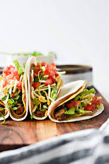

Double Decker Tacos

Description
Soft taco on the outside, crispy taco on the inside.
These are easier to eat than a regular taco.
The soft taco keeps everything together.
Ingredients
- 10 hard taco shells that are flat on the bottom called Stand n' Stuff
- 10 small flour tortillas snack size
- 1 lb ground beef
- 1 packet taco seasoning
- 2 cups of chedder cheese, shredded
- 2 cups of shredded lettuce
- 1 (16 ounce) can refried beans or 2 cups homeade refried beans
- salsa
Steps
- Cook ground beef untill it browns
- Drain ground beef
- Add taco seasoing
- while beef is simmering put refried beans in a small sauce pan to warm over low heat. May need to add 1-2 tbs of water to the beans to thin them out a bit.
- Warm soft tortillas in a dry skillet over low to medium heat. You don't want to brown or crisp them at all. just warm them on both side so that they are pilable.
- Keep tortillas warm in foil. These can be palced in a warm oven if needed.

Description
Ingredients
Steps